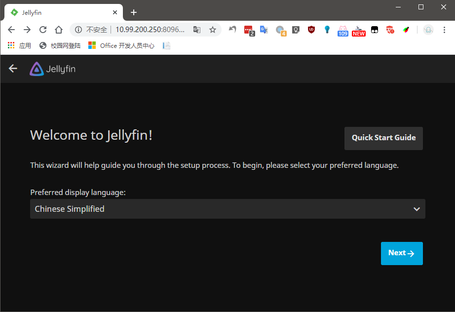
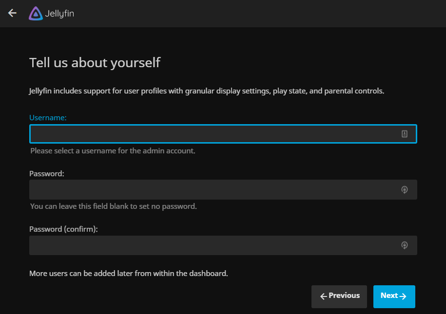
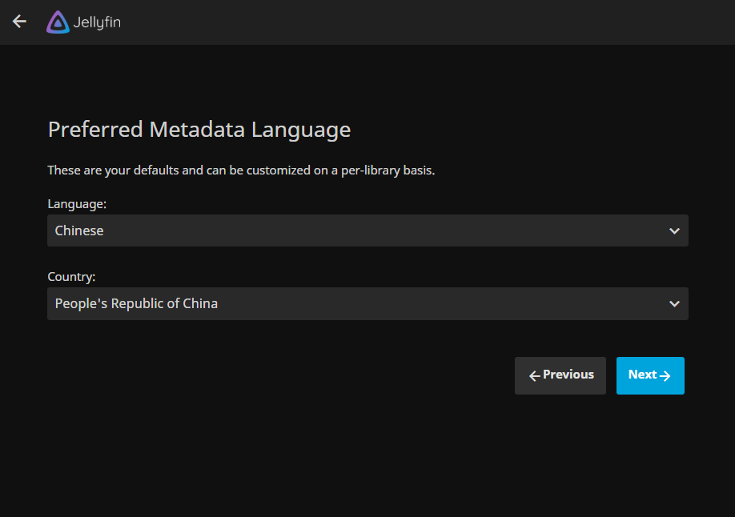
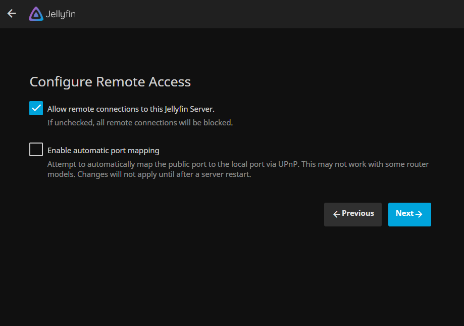
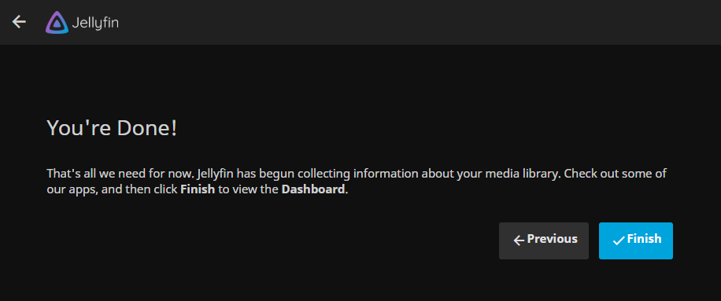

Emby的开源替代品，操作基本一致
先放两张效果图
完美的宅家生活 不就是这样嘛
在 Windows 系统上安装
直接去 官网 下载安装包就好，我才懒得讲怎么装（
Ubuntu/Debian 安装
从官方源中安装
- Debian
1
2
3
4
5
6
7
8
9
10
| #添加 Jellyfin Team 的签名
wget -O - https://repo.jellyfin.org/debian/jellyfin_team.gpg.key | sudo apt-key add -
#添加源
echo "deb [arch=$( dpkg --print-architecture )] https://repo.jellyfin.org/debian $( lsb_release -c -s ) main" | sudo tee /etc/apt/sources.list.d/jellyfin.list
#更新缓存
sudo apt update
#安装 Jellyfin
sudo apt install jellyfin
#开机自启
sudo systemctl enable jellyfin
|
- Ubuntu
1
2
3
4
5
6
7
8
9
10
11
12
| #启用 Universe repository
add-apt-repository universe
#添加 Jellyfin Team 的签名
wget -O - https://repo.jellyfin.org/ubuntu/jellyfin_team.gpg.key | sudo apt-key add -
#添加源
echo "deb [arch=$( dpkg --print-architecture )] https://repo.jellyfin.org/ubuntu $( lsb_release -c -s ) main" | sudo tee /etc/apt/sources.list.d/jellyfin.list
#更新缓存
sudo apt update
#安装 Jellyfin
sudo apt install jellyfin
#开机自启
sudo systemctl enable jellyfin
|
获取 deb 包方式安装 (如果前面哪种方法很慢可以试试这种)
- 中国大陆地区建议找个代理来进行下面操作
- 从 这里(Debian) 或者 这里(Ubuntu) 下载最新版本的 Jellyfin 主程序
- 从 这里(Debian) 或者 这里(Ubuntu) 下载最新版本的 jellyfin-ffmpeg
- 将两个deb文件发送到服务器上
- 安装依赖(Debian)
sudo apt install at libass9 libbluray2 libfl2 libmp3lame0 libnuma1 libogg0 libopus0 libtheora0 libva-drm2 libva2 libvdpau1 libvorbis0a libvorbisenc2 libwebpmux3 libx264-155 libx265-165 libzvbi-common libzvbi0
- 安装依赖(Ubuntu)
sudo apt install sudo apt install at libsqlite3-0 libfontconfig1 libfreetype6 libssl1.0.0
- 安装 Jellyfin
sudo dpkg -i jellyfin_*.deb jellyfin-ffmpeg_*.deb
- 解决剩下的依赖问题
sudo apt -f install
开始使用
打开浏览器，进入 http://ip:8096/，选择中文





反向代理
根据官方贴出来的配置修改
1
2
3
4
5
6
7
8
9
10
11
12
13
14
15
16
17
18
19
20
21
22
23
24
25
26
27
28
29
30
31
32
33
34
35
36
37
38
39
40
41
42
| server {
listen 端口号 ssl http2;
server_name 你的域名;
ssl_certificate 证书路径;
ssl_certificate_key 密钥路径;
ssl_stapling on;
ssl_stapling_verify on;
# Security / XSS Mitigation Headers
add_header X-Frame-Options "SAMEORIGIN";
add_header X-XSS-Protection "1; mode=block";
add_header X-Content-Type-Options "nosniff";
# Content Security Policy
# See: https://developer.mozilla.org/en-US/docs/Web/HTTP/CSP
# Enforces https content and restricts JS/CSS to origin
# External Javascript (such as cast_sender.js for Chromecast) must be whitelisted.
add_header Content-Security-Policy "default-src https: data: blob:; style-src 'self' 'unsafe-inline'; script-src 'self' 'unsafe-inline' https://www.gstatic.com/cv/js/sender/v1/cast_sender.js; worker-src 'self' blob:; connect-src 'self'; object-src 'none'; frame-ancestors 'self'";
location / {
# Proxy main Jellyfin traffic
proxy_pass http://127.0.0.1:8096/;
proxy_set_header Host $host;
proxy_set_header X-Real-IP $remote_addr;
proxy_set_header X-Forwarded-For $proxy_add_x_forwarded_for;
proxy_set_header X-Forwarded-Proto $scheme;
proxy_set_header X-Forwarded-Protocol $scheme;
proxy_set_header X-Forwarded-Host $http_host;
# Disable buffering when the nginx proxy gets very resource heavy upon streaming
proxy_buffering off;
}
location /socket {
# Proxy Jellyfin Websockets traffic
proxy_pass http://127.0.0.1:8096/socket;
proxy_http_version 1.1;
proxy_set_header Upgrade $http_upgrade;
proxy_set_header Connection "upgrade";
proxy_set_header Host $host;
proxy_set_header X-Real-IP $remote_addr;
proxy_set_header X-Forwarded-For $proxy_add_x_forwarded_for;
proxy_set_header X-Forwarded-Proto $scheme;
proxy_set_header X-Forwarded-Protocol $scheme;
proxy_set_header X-Forwarded-Host $http_host;
}
}
|
服务控制
1
2
3
4
5
6
| #查看状态
systemctl status jellyfin
#启动服务
systemctl start jellyfin
#停止服务
systemctl stop jellyfin
|